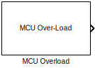

MCHP_MCU_OVERLOAD - Task Overload Detection

MCU_Overload Block Icon
Description
The MCHP_MCU_OVERLOAD block detects when scheduled tasks miss their deadlines and provides diagnostic information for identifying the cause of overload conditions.
Output Signals
| Output |
Data Type |
Description |
| Overload_Flag |
boolean |
1 = Task missed deadline, 0 = Normal operation |
| Overload_TaskID |
uint8 |
ID of task that caused overload (if known) |
| Overload_Count |
uint32 |
Cumulative count of overload events |
Overload Conditions
| Condition |
Detection Method |
Response |
| Task execution exceeds period |
Compare execution time vs sample time |
Set flag, log task ID |
| Queue overflow |
Task triggered while already queued |
Set flag, increment counter |
| Preemption cascade |
Multiple nested preemptions |
Set flag, identify root task |
Example Usage
% Overload detection and safe shutdown
Overload_Flag → LED (visual warning)
Overload_Flag → Switch
→ if (1): Enter safe mode
Disable non-critical tasks
Log diagnostics
% Recovery strategy:
if Overload_Count > 10
% Persistent overload - reduce functionality
Disable_MotorControl();
Enable_SafeShutdown();
end
Debugging with Overload Block
% Analysis workflow:
1. Connect outputs to scopes/displays
2. Run model and observe overload events
3. Identify TaskID causing overload
4. Use MCHP_Tasks_State to see task interactions
5. Optimize identified task or reduce sample rate
% Common overload patterns:
TaskID=1, Count growing → Base rate task too slow
TaskID varies randomly → Interrupt storms
TaskID=0 (idle) → Should never happen (check config)
See Also